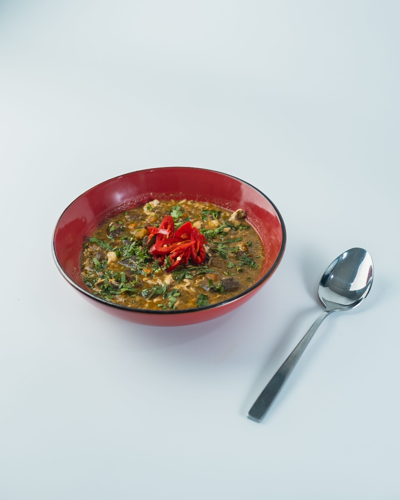

Eba and Egusi
This is a traditional Nigerian dish made with Eba (a starchy side made from cassava flour) and Egusi soup (a thick soup made from melon seeds, vegetables, and meat or fish).
Ingredients
- 2 cups of cassava flour
- 4 cups of water
- 1 cup of ground egusi seeds
- 1/2 cup of palm oil
- 1 onion, chopped
- 2 cups of chopped spinach or bitterleaf
- 1-2 cups of meat or fish (optional)
- Salt and pepper to taste
Back to Home
